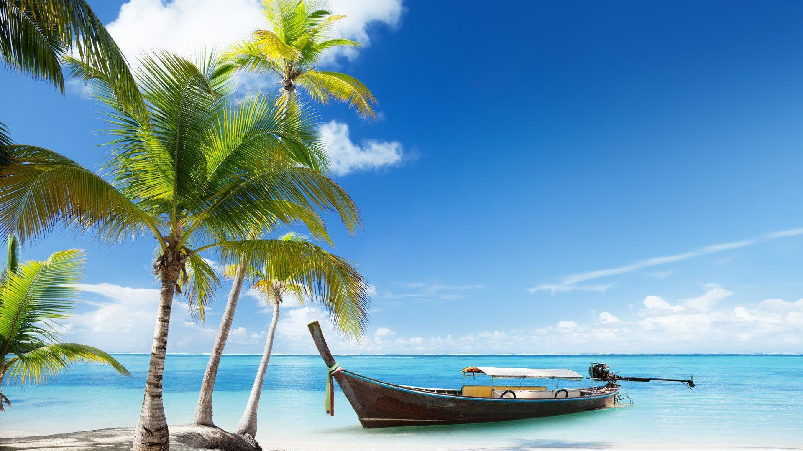
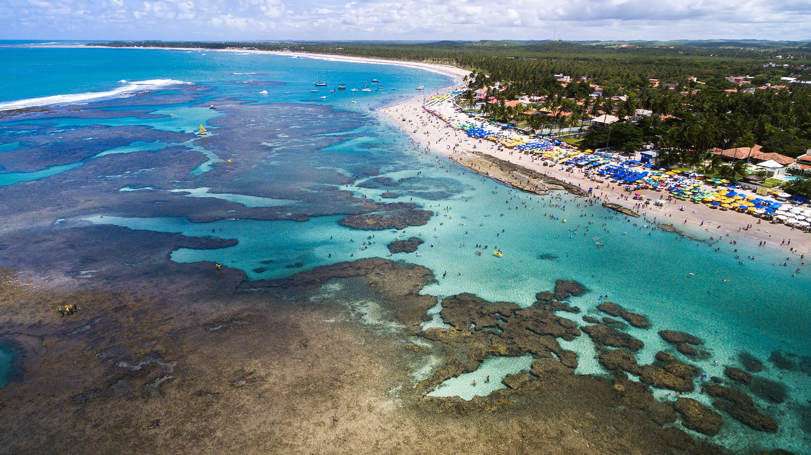

| Quem somos? |
|---|
|
Olá nós somos o site Viage Comigo, surgimos no dia 01/06/2021 com o intuito de trazer aos usuários
que gostam de viajar
novas experiências, informação e diversão, afinal quem não gosta de viajar não é mesmo? O site foi desenvolvido por Everton Lucas de Lima Gomes, aluno do 4º Período de engenharia de software, totalmente sem fins lucrativos e puramente para aprendizagem e desenvolvimento da 1º unidade da disciplina de Programação e desenvolvimento Web, ministrada pelo professor Fábio Feliciano. |
| O site |
|
Atualmente o site está dividido em 4 seções onde trazemos conteúdo sobre viajens e turismo. Roteiros: Nessa seção trazemos imagens e diversos pontos túristicos de todas as 5 regiões do Brasil pra te ajudar na pesquisa e escolha na hora de viajar, afinal sabemos como é díficil escolher um lugar para onde viajar! No início da seção há um mapa para maior facilidade de encontrar as regiões, basta clicar em qualqur região e você será levado a seção que fala sobre aquela região. Manual do Turista: Nessa seção nós separamos algumas dicas pra te ajudar quando for viajar! dá uma conferida. Praias: Aqui você vai achar uma lista das 5 praias que mais me chamaram atenção, espero que você também goste! Ao passar o mouse por cima de um card será possível ver algumas informações sobre aquele lugar Fale Conosco: Área reservada para recebermos sugestões e dicas de vocês! |
| Turismo no Brasil |
|
O Brasil é um país extremamente rico em quando falamos em turísmo, todos as 5 regiões possuem
grandes quantidades de pontos conhecidos nacionalmente e internationalmente, lagoas, vales, hoteis,
parques e outra diversidade de locais, são mais de 7,3 mil quilômetros de litoral. Em 2018 o
BrasilBrasil recebeu 6,5 milhões de turistas estrangeiros em 2018, sendo classificado, em termos de
chegadas de turistas internacionais, como o principal destino da América do Sul e o terceiro na
América Latina, depois do México e da Argentina. As receitas geradas pelos turistas internacionais
atingiram 5,8 bilhões de dólares em 2015.
|